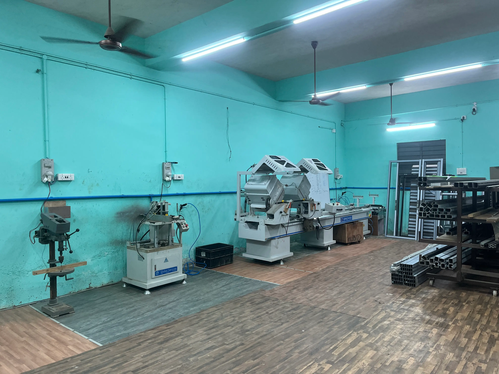
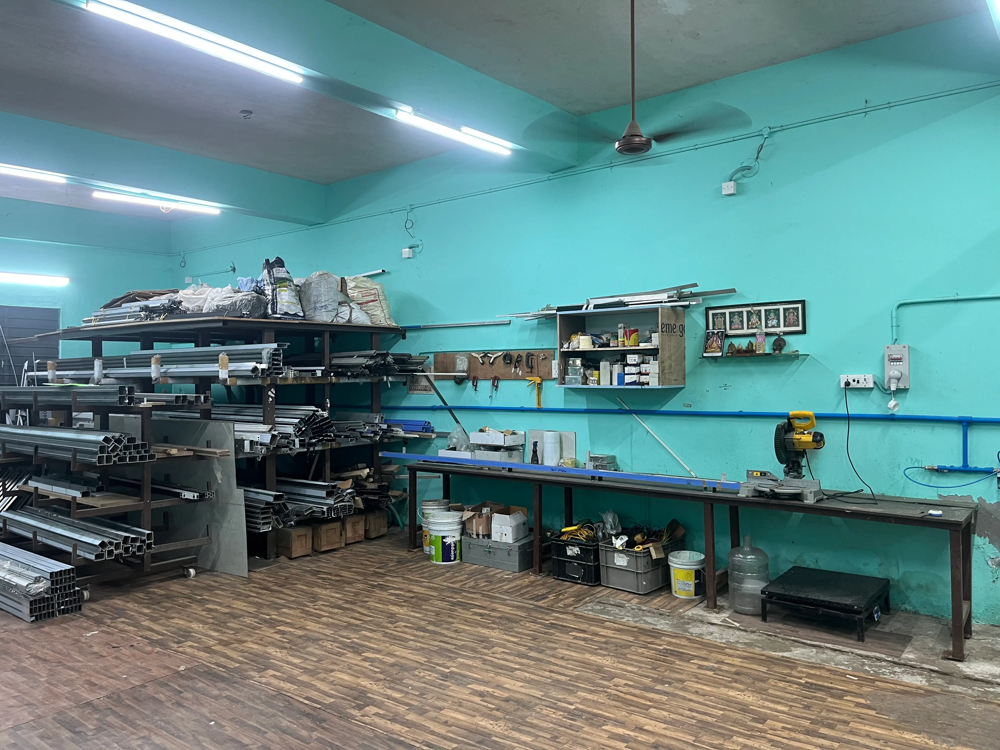
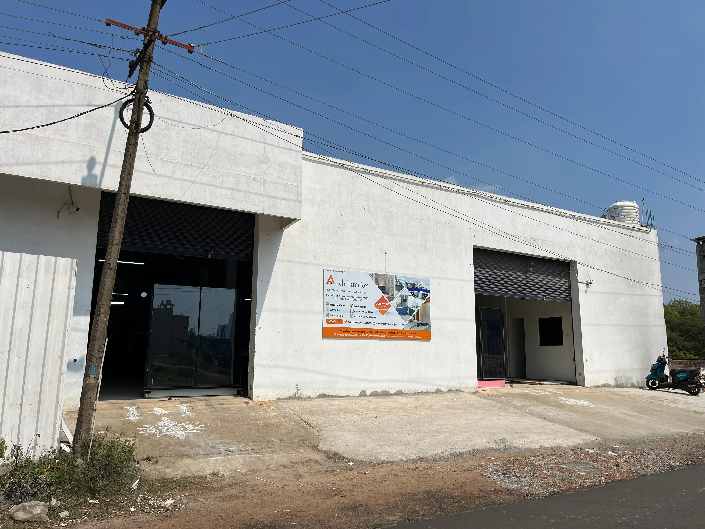
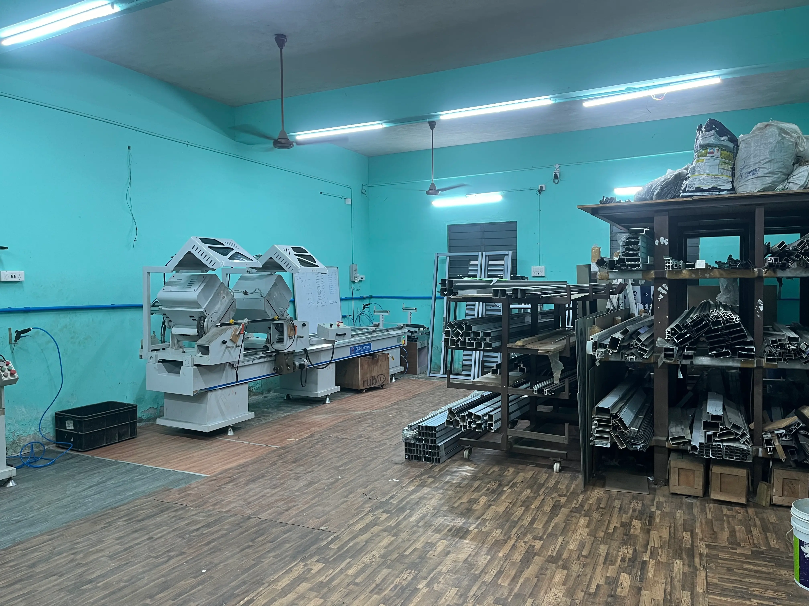

Our Manufacturing Facilities
Two dedicated in-house units ensuring quality from raw material to final installation.
Aluminium Fabrication Unit – Thirumullaivoyil
Our aluminium fabrication unit in Thirumullaivoyil, Chennai, is equipped with advanced cutting and milling machinery to ensure precision and consistency in every project.
The facility supports customized fabrication works for partitions, glazing systems, doors, windows, and structural aluminium elements for residential and commercial interiors.
Wood Processing Unit – Pothur
Our wood processing unit in Pothur, Chennai, is dedicated to manufacturing high-quality modular and customized interior components. Equipped with modern panel processing and finishing machinery for precise cutting, seamless edge finishing, and durable laminate bonding.
With strict quality control and in-house production, we ensure accurate execution, faster turnaround time, and superior finishing standards — maintaining consistent quality and timely delivery for all interior projects.
Factory Machines
State-of-the-art machinery powering precision at every stage of production.
Mitre Saw Machine
Used for precise angular cutting of aluminium and wood profiles.
Ensures accurate joints and clean finishes for frames, partitions, and structural elements.

Double Head Cutting Machine
Simultaneous cutting from both ends with high precision, supporting up to 120mm profile cutting at various angles.
Ideal for bulk production ensuring uniform measurements, clean finishes, and improved productivity.

Automatic End Milling Machine
Used to mill and shape profile ends for seamless frame assembly.
Delivers accurate finishing for aluminium sections with consistent quality.

Pasting and Cold Pressing Machine
Ensures strong bonding of laminates and veneers to panels.
Provides uniform pressure for smooth surfaces and long-lasting durability.

Cutting and Panel Saw Machine
High-precision machine for cutting plywood, MDF, and panels to exact sizes.
Enables clean edges and optimized material usage for large-scale projects.

Automatic Edge Banding Machine
Applies edge tapes to panels for a refined and seamless finish.
Enhances durability, aesthetics, and moisture resistance of furniture components.

Automatic Plate Slotting Machine
Used for accurate groove and slot creation in panels and boards.
Improves joint strength and ensures precise assembly during installation.